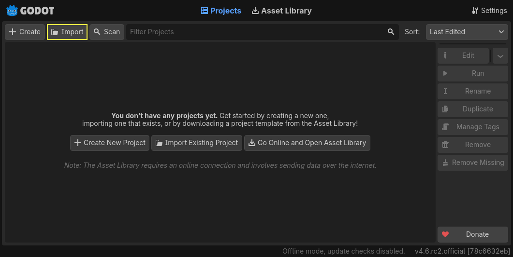
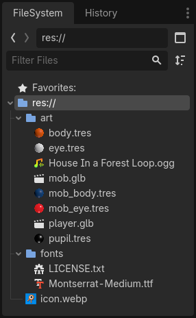
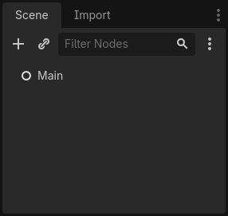
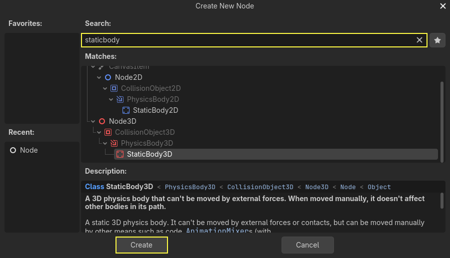
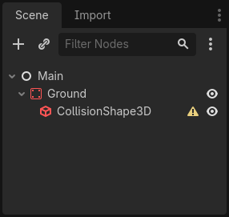
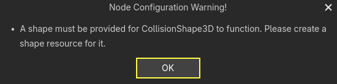
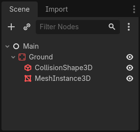
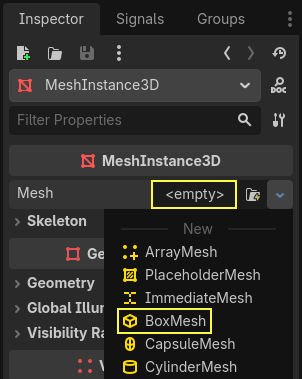
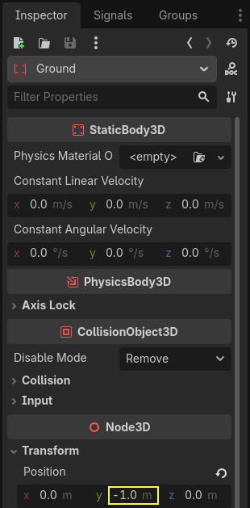

Setting up the game area
In this first part, we're going to set up the game area. Let's get started by importing the start assets and setting up the game scene.
We've prepared a Godot project with the 3D models and sounds we'll use for this tutorial, linked in the index page. If you haven't done so yet, you can download the archive here: Squash the Creeps assets.
Once you've downloaded it, extract the .zip archive on your computer. Open the Godot Project Manager and click the Import button.

In the import popup, enter the full path to the freshly created directory
3d_squash_the_creeps_starter/. You can click the Browse button on the right to
open a file browser and navigate to the project.godot file the folder
contains.

Click Import to open the project in the editor.

A window notifying you that the project was generated by an older Godot version may appear. Click OK to convert the project to your current Godot version.

If it doesn't open immediately, open the project from your project list.
The start project contains an icon and two folders: art/ and fonts/.
There, you will find the art assets and music we'll use in the game.

There are two 3D models, player.glb and mob.glb, some materials that
belong to these models, and a music track.
Setting up the playable area
We're going to create our main scene with a plain Node as its root. In the
Scene dock, click the Add Child Node button represented by a "+" icon in the
top-left and double-click on Node. Name the node Main. An alternate method to rename the node is to right-click on Node and choose Rename (or F2). Alternatively, to add
a node to the scene, you can press Ctrl + A (Cmd + A on macOS).

Save the scene as main.tscn by pressing Ctrl + S (Cmd + S on macOS).
We'll start by adding a floor that'll prevent the characters from falling. To
create static colliders like the floor, walls, or ceilings, you can use StaticBody3D nodes. They require CollisionShape3D child nodes to
define the collision area. With the Main node selected, add a StaticBody3D
node, then a CollisionShape3D. Rename the StaticBody3D to Ground.

Your scene tree should look like this

A warning sign next to the CollisionShape3D appears because we haven't defined its shape. If you click the icon, a popup appears to give you more information.

To create a shape, select the CollisionShape3D node, head to the Inspector and click the <empty> field next to the Shape property. Create a new BoxShape3D.

The box shape is perfect for flat ground and walls. Its thickness makes it reliable to block even fast-moving objects.
A box's wireframe appears in the viewport with three orange dots. You can click
and drag these to edit the shape's extents interactively. We can also precisely
set the size in the inspector. Click on the BoxShape3D to expand the resource.
Set its Size to 60 on the X-axis, 2 for the Y-axis, and 60 for
the Z-axis.

Collision shapes are invisible. We need to add a visual floor that goes along
with it. Select the Ground node and add a MeshInstance3D as its child.

In the Inspector, click on the field next to Mesh and create a BoxMesh resource to create a visible box.

Once again, it's too small by default. Click the box icon to expand the
resource and set its Size to 60, 2, and 60.

You should see a wide grey slab that covers the grid and blue and red axes in the viewport.
We're going to move the ground down so we can see the floor grid. To do this, the grid snapping feature can be used. Grid snapping can be activated 2 ways in the 3D editor. The first is by pressing the Use Snap button (or pressing the Y key). The second is by selecting a node, dragging a handle on the gizmo then holding Ctrl (Cmd on macOS) while holding the selected node.

Start by setting snapping with your preferred method. Then move the Ground node using the Y-axis (the green arrow on the gizmo).

Note
If you can't see the 3D object manipulator like on the image above, ensure the Transform Mode is active in the toolbar above the view.
Move the ground down 1 meter, in order to have a visible editor grid. A label in the bottom-left corner of the
viewport tells you how much you're translating the node.

Note
Moving the Ground node down moves both children along with it. Ensure you move the Ground node, not the MeshInstance3D or the CollisionShape3D.
Ultimately, Ground's Y position should be -1.

Let's add a directional light so our scene isn't all grey. Select the Main
node and add a child node DirectionalLight3D.

We need to move and rotate the DirectionalLight3D node. Move it up by clicking and dragging on the manipulator's green arrow and click and drag on the red arc to rotate it around the X-axis, until the ground is lit.
In the Inspector, turn on Shadow by clicking the checkbox.

At this point, your project should look like this.

That's our starting point. In the next part, we will work on the player scene and base movement.